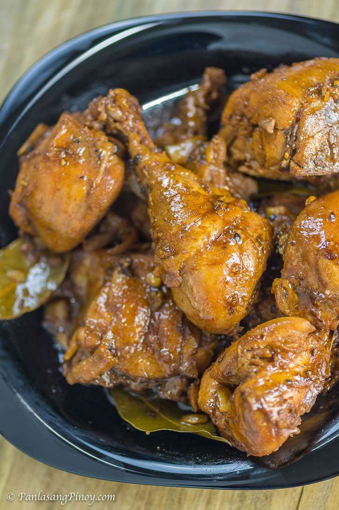

My Favorite Dish
My Favorite Dish
Filipino Chicken Adobo Recipe
Chicken Adobo is a type of Filipino chicken stew.
Chicken pieces are marinated in soy sauce and spices,
pan-fried, and stewed until tender. The dish gained popularity
because of its delicious taste and ease in preparation.

It tastes just right and the cooking time is around 30 minutes.
The best way to eat chicken adobo is to have it with warm white rice.
The combo is simply known as Chicken Adobo and Rice. Pouring some of the
adobo sauce over rice before eating is a good idea because it makes it more
flavorful.
The famous Chicken Adobo originated in the Philippines. The dish is prepared
using the Inadobo style of cooking. It means cooking meat or seafood with
vinegar and mostly soy sauce. It is a popular method during the olden days
when refrigerators and freezers were not yet available because vinegar helps
extend the shelf life of food. Another popular variation is pork adobo using
pork belly,
Filipino Chicken Adobo is the national dish of the Philippines and like all
traditional dishes, there are many variations – including different proteins like
pork and beef.
Fundamentally though, the key ingredients are the right balance of soy sauce, vinegar,
black pepper and sugar that create an incredibly sticky glaze that has a depth of flavour
like it’s been slow cooked – but it’s not!
Chicken slices cooked in soy sauce and vinegar with garlic. This is a delicious
Filipino chicken dish that you can eat for lunch with warm white rice.
Preparation:
- Cooking Chicken Adobo is quick and simple. This recipe suggests marinating the chicken to make it
more flavorful. It is the best way to go if you want to experience authentic Filipino chicken adobo.
If you are in a hurry, feel free to skip this step, but make sure to simmer the chicken longer than
30 minutes to better extract the flavors from it.
- Start by marinating the chicken in soy sauce and garlic. The garlic needs to be crushed for best results.
This process takes 1 hour to 12 hours depending on how flavorful you want the dish to be. Sometimes marinating
for an hour is not enough. I think that 3 hours is optimal. The chicken absorbs most of the flavors from the soy
sauce and garlic during this step. It is noticeable when you taste the dish after cooking. Note that it is also
possible to include the vinegar in this step.
- The next step is to separate the chicken from the marinade. Make sure to set the marinade aside because it will
be used later on. Pan-fry the chicken pieces for 1 to 1 ½ minutes per side. This will partially cook the outer part.
It also makes the skin tough enough to withstand stewing later. This means that it will remain intact, which is nice
for presentation.
- Pour marinade into the pot and add water. Let boil. The bay leaves and whole peppercorn can now be added.
The process takes 20 to 25 minutes depending on the quality of the chicken. However, feel free to cook longer in
low heat for a super tender chicken adobo.
- Add the vinegar. This can also be added as a part of the marinade. Let it cook for 10 minutes and then add sugar and salt.
I only add salt if needed. It is important to taste your dish before adding seasonings.
- Filipino chicken adobo can be served with or without sauce. If you like it very tasty then continue to cook on an uncovered
cooking pot until the liquid completely evaporates.
Ingredients:
- 2 lbs chicken cut into serving pieces
- 3 pieces dried bay leaves
- 8 tablespoons soy sauce
- 4 tablespoons white vinegar
- 5 cloves garlic crushed
- 1 1/2 cups water
- 3 tablespoons cooking oil
- 1 teaspoon sugar
- 1/4 teaspoon salt optional
- 1 teaspoon whole peppercorn
Instructions:
- Combine chicken, soy sauce, and garlic in a large bowl. Mix well.
Marinate the chicken for at least 1 hour. Note: the longer the time,
the better
- Heat a cooking pot. Pour cooking oil.
- When the oil is hot enough, pan-fry the marinated chicken for 2 minutes
per side.
- Pour-in the remaining marinade, including garlic. Add water. Bring to a boil
- Add dried bay leaves and whole peppercorn. Simmer for 30 minutes or until the
chicken gets tender
- Add vinegar. Stir and cook for 10 minutes.
- Put-in the sugar, and salt. Stir and turn the heat off.Serve hot. Share and Enjoy!